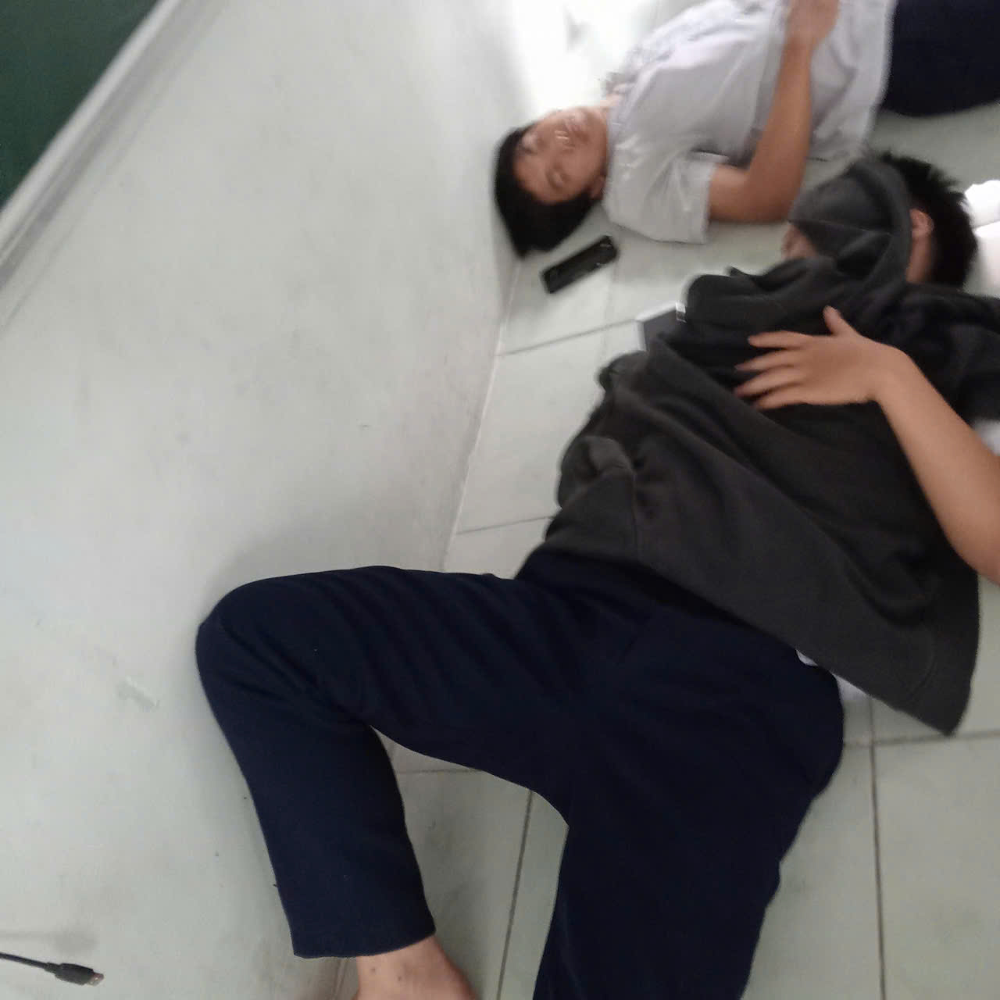
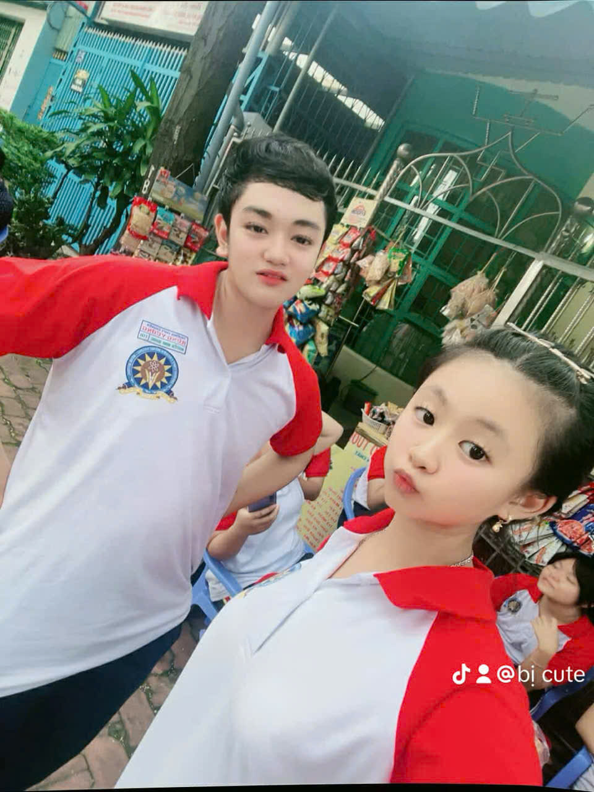
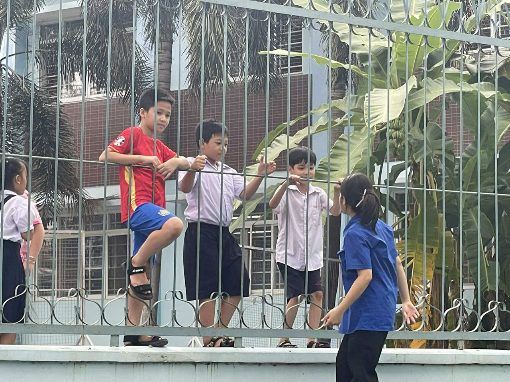
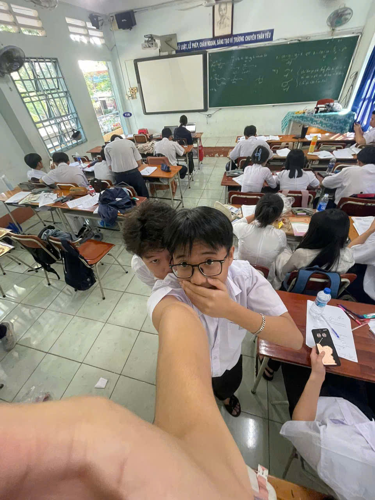
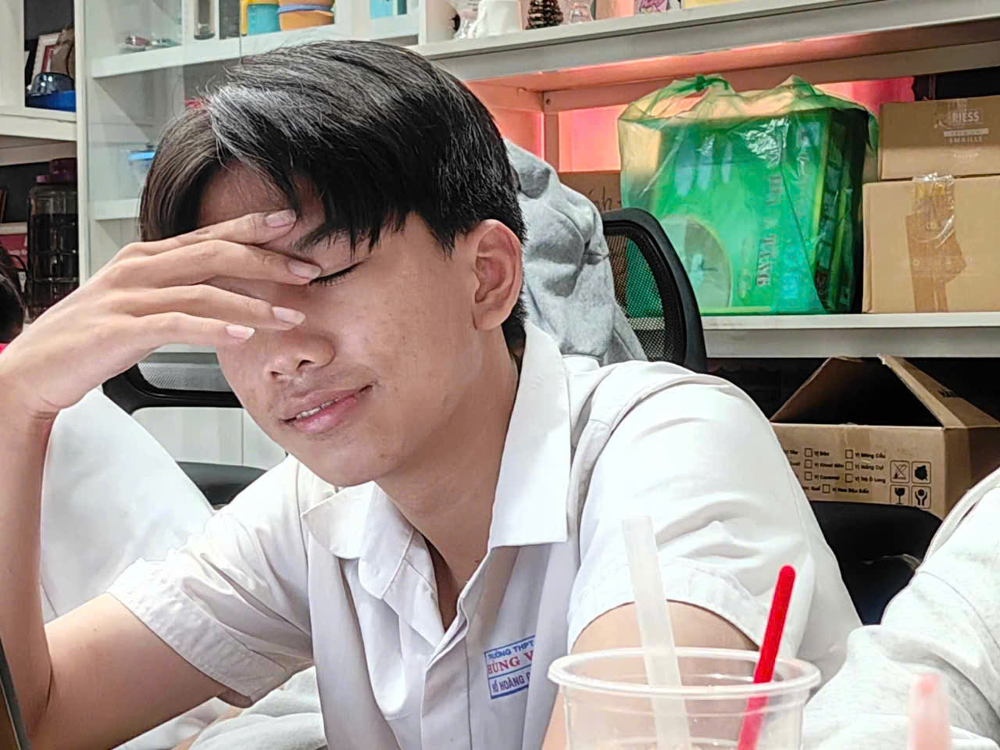
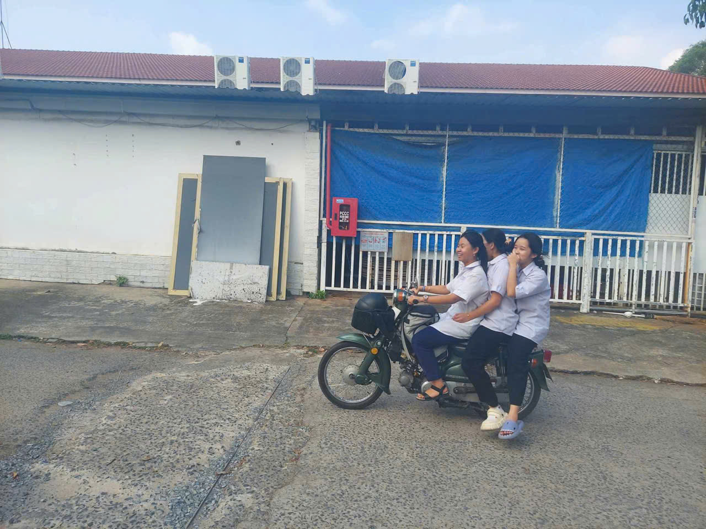
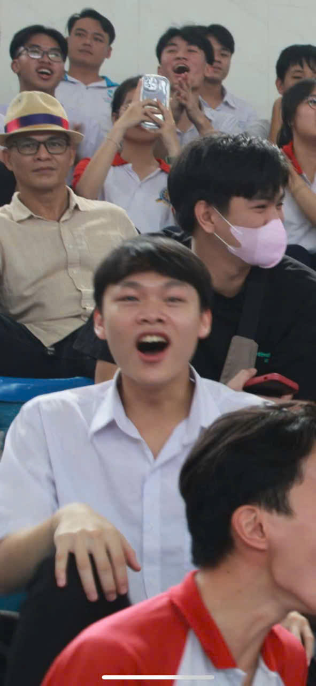
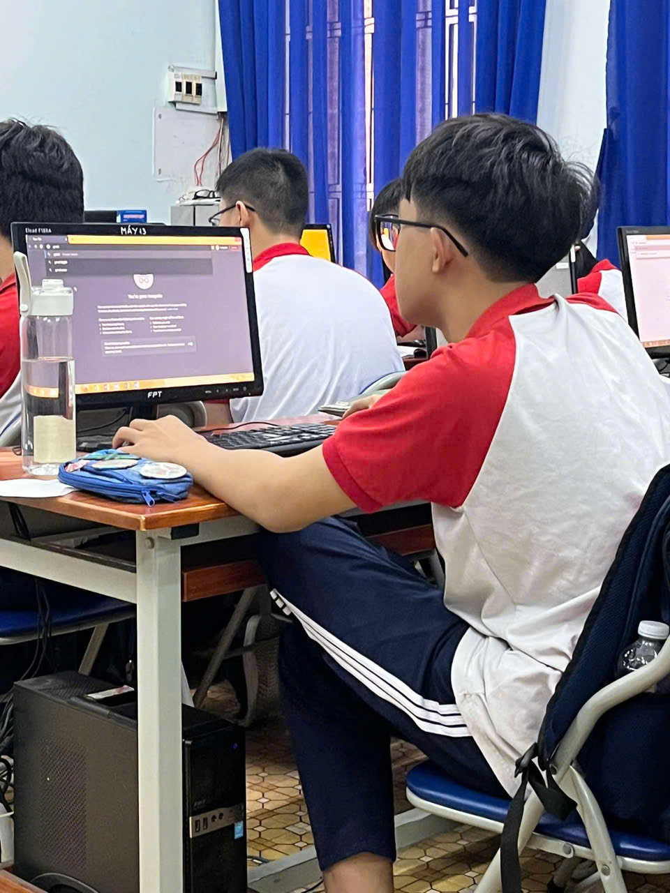
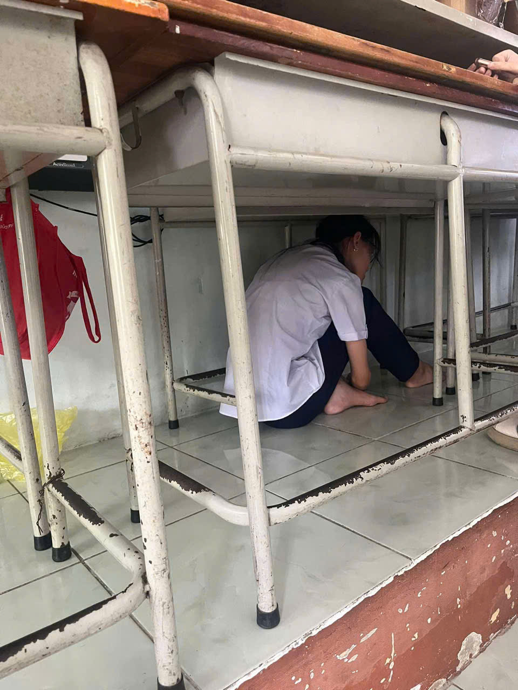
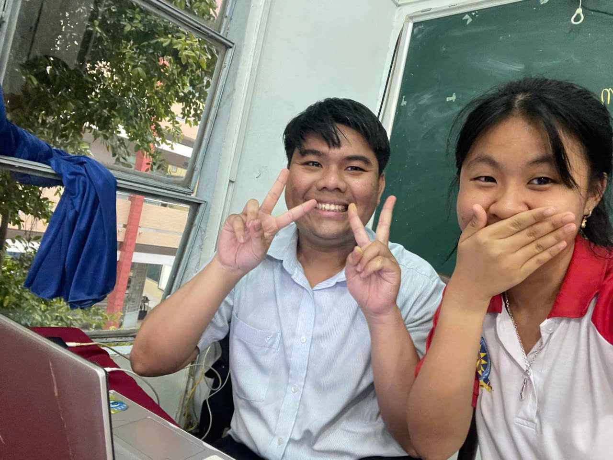

Có những bức ảnh, khi nhìn lại, ta bất giác mỉm cười. Không phải vì tấm ảnh quá hoàn hảo, mà bởi trong đó là cả một quãng thanh xuân trong trẻo.
11H – Chuyên Hóa – THPT Chuyên Hùng Vương. Những buổi học Hóa đầy công thức, những giờ ra chơi ngắn ngủi và những lần cùng nhau than bài khó.
Lớp 11 không quá ồn ào, cũng chẳng vội vã, nhưng lại là khoảng thời gian dễ thương nhất.
Rồi sau này, mỗi người một hành trình riêng, nhưng ai cũng từng tự hào khi nói: "Mình đã từng là 11H."
Cảm ơn 11H vì một thanh xuân thật đẹp 💖









